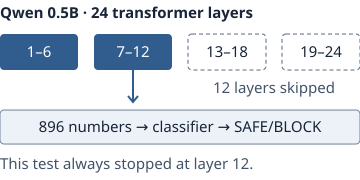

Early tests
Stopping early
An easy task may not need every step of a model’s processing.

A small classifier reads the numbers inside Qwen and predicts a label. At layers 6, 12 and 18, its confidence score decides whether to stop or continue.
Our 600-message chat test stopped at layer 12 every time. It missed 26 toxic messages, compared with 19 at full depth, and failed the reliability check. This was a fixed shortcut, not a detector of when an answer was ready.
Later small tests tried different stopping depths, learned confidence checks and a tiny model with Qwen as fallback. See how the methods compare.
Technical details and sources
Latest small experiments: learned stopping, model training and measured time · Adversarial review. These use 100 previously inspected messages and remain exploratory.
600 real chat decisions: results and measured runtime · Independent review · Watch recorded maze decisions.
Second-dataset validation · Testing an unknown-request output · Evidence requirements.
Separate implementation replay and portable classifiers · Changing-rule test: the current classifier failed · Adversarial reassessment.
Tests on 3,080 public banking queries | Stricter rule on a fresh reserve
Exactly how the classifier and stopping rule work · Real-query test protocol · Original per-query evidence
Checkpoints inside the model
Task heads at selected layers make candidate predictions. A gate decides whether to return, continue, or escalate. We begin with full-depth outputs, then measure intermediate readouts and actual early stopping.
Collecting intermediate states after running every layer is useful for training probes, but saves no inference computation. The runtime must skip later blocks. Timings must include the exit checks.
FastBERT, CALM, and LayerSkip provide relevant prior work in different settings.
Continuation and handoffs
Continuing within one model reuses compatible activations. Two independently trained models do not have interchangeable hidden states; a direct handoff needs an explicitly trained interface and comparison against simply reprocessing the original input.
CPU, GPU, and NPU placement are measured engineering choices. Copies, model residency, batching, cache repair, and fallback can eliminate theoretical savings. Parameter counts alone do not establish latency or cost.
Conditions for a useful shortcut
- Quality holds at a registered error tolerance.
- Accepted-request coverage is useful; rejecting everything is not success.
- Actual input-to-result time improves, including fallback.
- Changing rules, long context, unfamiliar inputs, and wrong high-confidence predictions remain visible in evaluation.